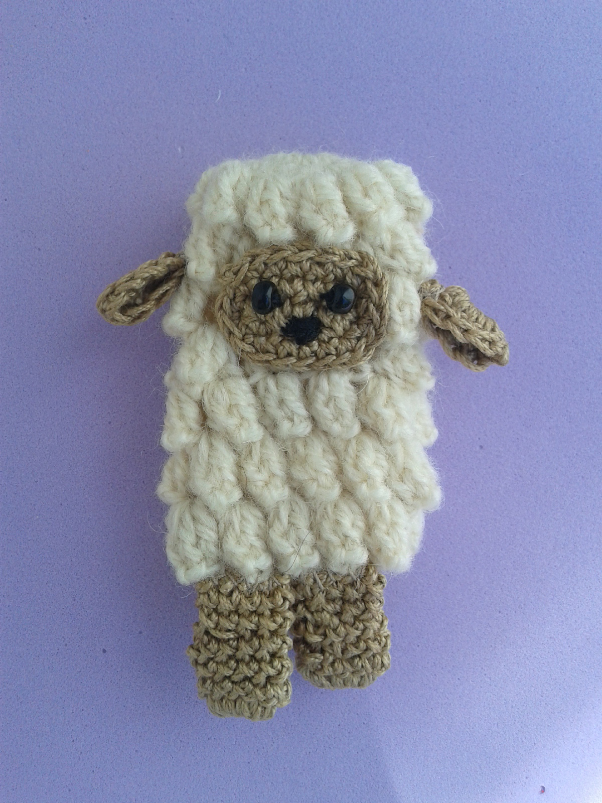
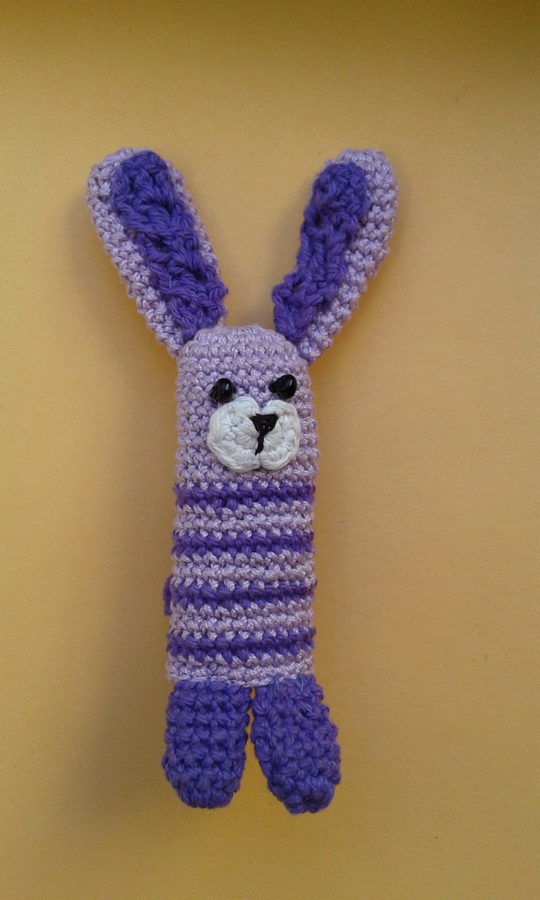
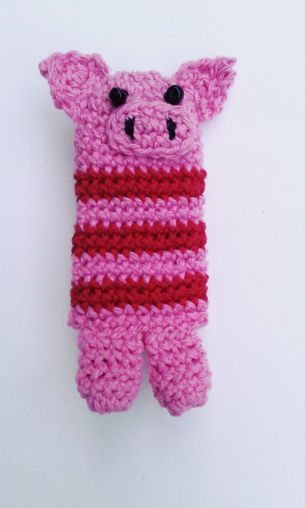
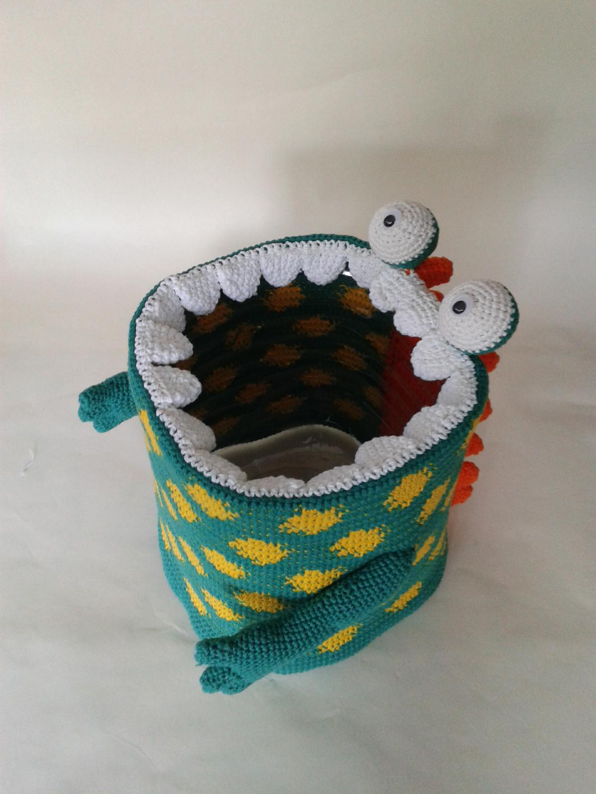
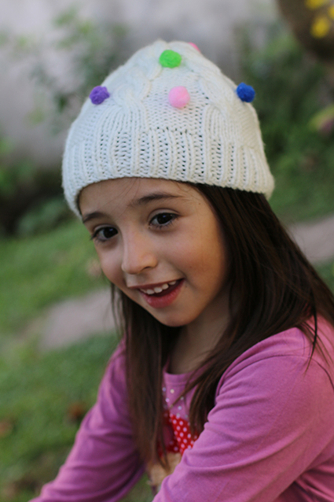
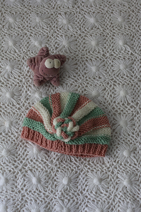
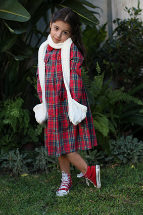
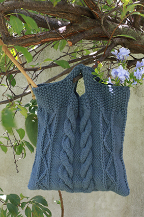
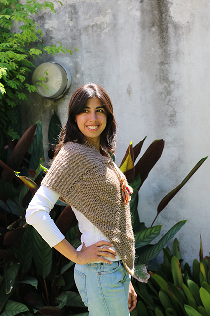

Títere de dedo Oveja
Tejido a crochet. Ideal para niños de 3 a 7 años.

Títere de dedo Conejo
Tejido a crochet. Ideal para niños de 3 a 7 años.

Títere de dedo Chancho
Tejido a crochet. Ideal para niños de 3 a 7 años.

Cesto para papeles Monstruoso
Tejido a crochet. Decoración para habitación infantil. A divertirse aprendiendo a tirar los papeles en el cesto monstruo comepapeles!

Gorrito infantil con minipompones
Tejido a 2 agujas. Para niños de 4 a 6 años.

Gorrito de bebé
Tejido a 2 agujas. Para una beba muy coqueta. De 6 meses a 1 año

Bufanda infantil con bosillos
Tejido a 2 agujas. Ideal para niños de 5 a 8 años. Con bolsillos incorporados, para guardar caramelos, juguetes o abrigarse las manitos.

Bolso tejido
Tejido a 2 agujas. Un toque de romanticismo y rusticidad.

Poncho básico
Tejido a 2 agujas. Un toque de estilo y abrigo para el look otoñal. Talle único.
Formas de pago
- Modo
- Mercado Pago
- Cuenta DNI
- Transferencias bancarias